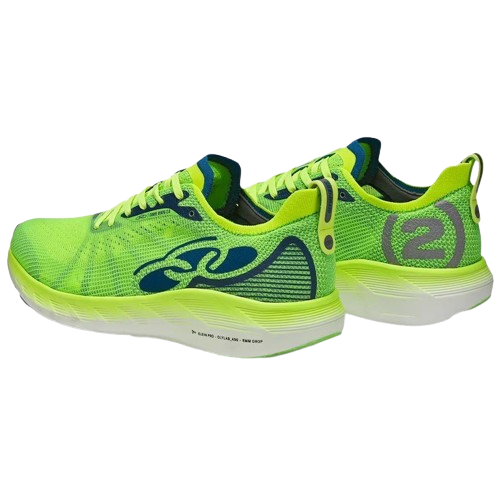
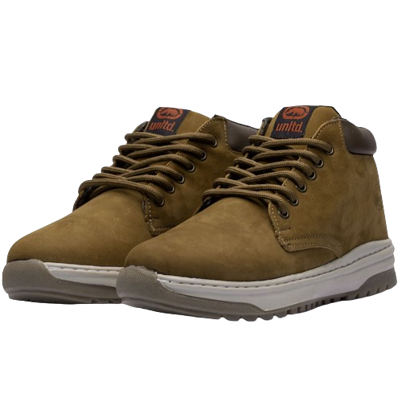
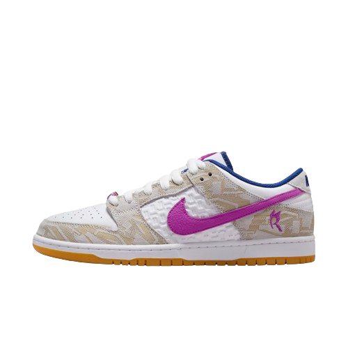
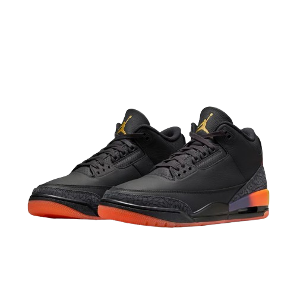

Tênis Olympikus Corre Vento 2
R$300,00

Bota de Couro Ecko Adventure Rt106Ek II
R$150,00

SB Dunk Low Rayssa Leal
R$800,00

Air Jordan 3 x J Balvin Rio
R$1900,00

Chuteira Society Penalty Se7e Locker XXI
R$290,00
×
Conte com a Chuteira de Society Penalty para brilhar nos campos de grama sintética na pelada com os amigos. O modelo possui design clássico e um cabedal texturizado que é produzido em material resistente e durável que conta com colarinho que oferece fácil calce e ajuste confortável. O solado de borracha conta com micro-travas que garantem segurança para você arriscar as melhores jogadas nos campos society. Complete seu uniforme de jogo com a Penalty e marque esse golaço!
Ideal para quadras de concreto